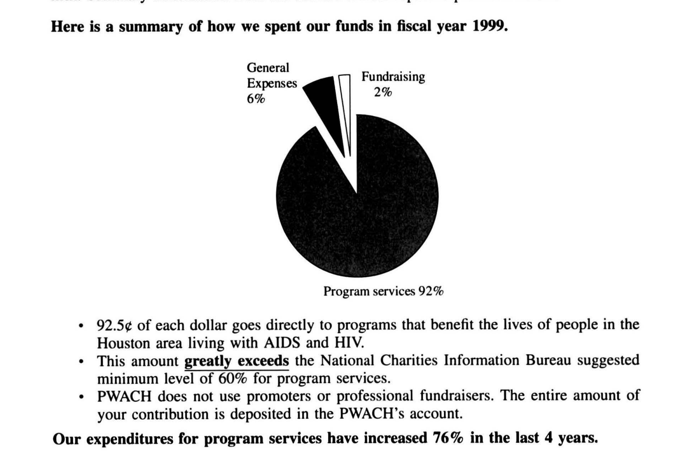
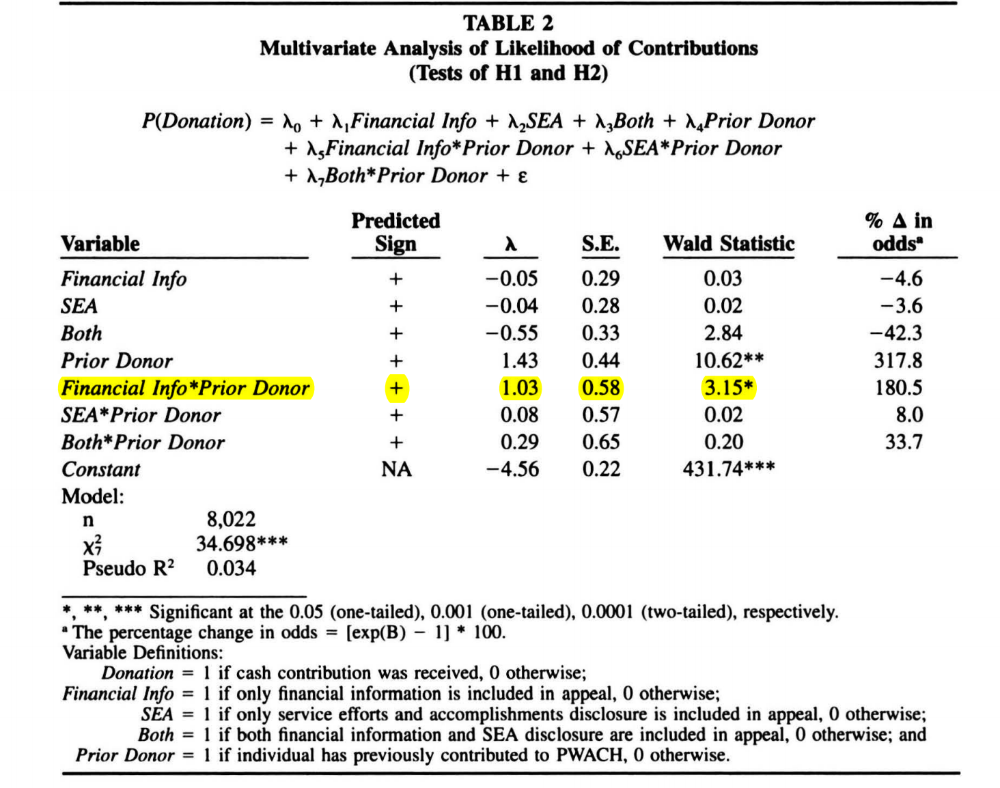
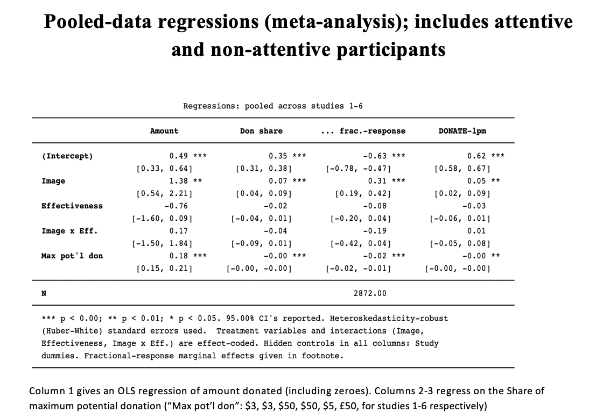
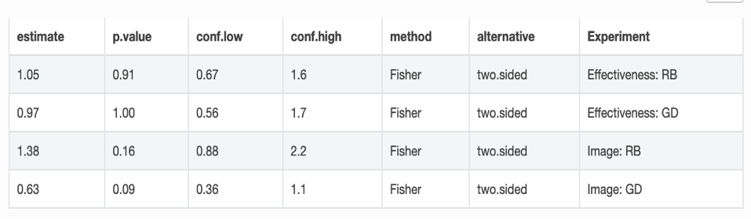

7 Barriers: Aversion/obstacles to doing (using) evaluations; effect of analytical information on generosity
Note: this is an ongoing project of David Reinstein with several co-authors, including ongoing field experiments as well as meta-analysis being planned.
Much of this project is organised in the dualprocess repo.
An earlier set of presentation slides (now pictures are missing – need to recover) is hosted here - press ‘O’ to see the fill multidimensional slide map; the outline slide is hereI am testing how to add some regular text here, OK, maybe I will put something in italics.
======= >>>>>>> 519a7caa52ea197e24374890aa184c1abc59b3c0 ======= >>>>>>> 519a7caa52ea197e24374890aa184c1abc59b3c07.1 General relevance to effective giving
For people to choose one product over another on the basis of some characteristic (e.g., safety, taste, or durability), they presumably must be aware of these differences before purchasing. Economists note [ref] the difficulty of investing in producing, marketing and selling high-quality products and services when consumers have difficulty distinguishing these products from inferior ones. This is especially difficult when the quality of a product is not known before purchase (an ‘Experience good’ [ref] such as a ticket to a particular stage show), or when it is not known until a long time later, if at all (a ‘credence good’ such as a health remedy or investment advice.)
Insert abundant references here to asymmetric information, fly-by-night competition, and experience and creedence goods, product reviews, regulation, advertising as a signal, etc.
Considering a charitable donation as a product purchased by the donor, it seems to fall into the latter category [ref to authors making this point]. If donors value their ‘marginal impact on outcomes’ as discussed in our earlier definitions of impact, they may need to do extensive research (or at least know about and visit web sites such as GiveWell and ImpactMatters) to have some estimate of the value-for-money they are getting.
Donors may also be uncertain about other benefits they main gain from each donation such as ‘gratitude and long-term sense of fulfillment’.
A typical charitable donor, particularly one who donates towards a geographically-distant intervention, will never directly see or experience the consequences of her donation.
Thus, for people to systematically choose to donate to the most effective charities, presumably…
They must understand and value the idea of effectiveness.
They must either:
- know how effective charities are relative to one another,
- have reliable information on this presented to them by the charities (or other entities),
- or they must want to and find it appropriate to seek information on this, and be able to obtain reliable information.
- (For b or c to have the desired effect…) The act of learning about effectiveness must not substantially decrease their willingness to donate.
In this section we consider the evidence for
I. People’s aversion/willness (or sense that it is appropriate/inappropriate) to evaluate effectiveness in a charitable giving context
- The impact of being presented with (or actively pursuing) effectiveness information (which is naturally analytical information) on generosity and the willingness to donate
Effectiveness information may also affect how donors perceive the social signaling value of their donation. We return to this in the signaling and social pressures… section.
Further ‘grant-worthy’ motivation (unfold).
As noted above, scientific evidence suggesting that organizations’ “cost per outcome” differs substantially, perhaps by a factor of 1000 or more (Jamison et al., 2006). This has motivated an increasing focus on charity effectiveness, spearheaded by initiatives from the Rockefeller and Gates foundations. Furthermore, organizations like GiveWell now provide direct ratings on the basis of per-dollar impact (e.g., cost per life saved), and are reaching out to larger audiences. This approach might boost giving, by leveraging donors’ preferences for contributions “to be put to good use”—i.e., for direct interventions.
E.g., In Aknin et al participants reported greater happiness when the impact of their contribution was highlighted. (van Iwaarden et al. 2009; Aknin et al., 2013).
However, while we have rigorous evidence on what works and doesn’t work in anti-poverty and health interventions (acknowledged by the 2019 Economics Nobel Prize), we actually know very little about how potential donors react to this impact information! However, we actually know very little about how potential donors react to this impact information!
7.2 General cost-benefit analysis (CBA)-aversion or reluctance
This is hard to label: ‘aversion’ may be the wrong word: people may finding it less appropriate/normal/virtuous to do CBA in a charitable context, or it may naturally not occur to them to do it.
7.2.1 Description
People may be reluctant* to consider the cost and benefits of the actions they are funding through their charitable donations (or they find this less appropriate/normal). This contrasts with a much greater willingness to consider these and other domains such as consumption, investment, and public policy. People also seem to avoid accessing/buying/seeing information (particular information that may be likely to feel compelled to give.)
How is this reluctance observed/manifested?
7.2.2 Theoretical/conceptual discussion
For this to be considered a bias, the relevant individuals must intrinsically value the usefulness of their charitable activity at least to some extent. I.e., they must be Moral Utilitarians, at least in part, or for some of the time. However, they may consider it very costly or distasteful to actually do this evaluation, or it may clash with other motivations and tendencies.
This aversion also must be distinguished from a lack of ability to do CBA in the charity domain; the latter would instead be considered a quantitative bias.
The reluctance to engage in this evaluation process may relate to the aforementioned “taboo trade-offs”; if these tradeoffs are taboo, considering them may involve great emotional distress.
(Berman et al. 2018) refer to the idea that “believing that charity is a subjective decision licenses individuals to donate in personally gratifying ways.” This perspective plausibly combines partial and conflicted Utililitarian preferences with the presence of moral licensing.
As Berman et al note, the belief that CBA is not a natural part of the charitable domain may stem from the lack of direct feedback one gets from donating (in Economics terms, a “credence” good) relative to consumption and investment goods.
(they cite: Imas paper?)
Several papers^citation needed^ find that people are reluctant to pay for—or actively seek to avoid— certain information. However, these may reflect motives distinct from CBA, such as a self-serving bias.
On the other hand … a majority ranked effectiveness [how highly?] as a crucial criterion to select a charity and reported greater happiness when the impact of their contribution was highlighted. (Aknin et al. 2013; van Iwaarden et al. 2009)
Psychological theory behind CBA
This CBA discomfort brings together several overlapping theoretical frameworks:
Fiske’s Relational Theory (1992; also see Aggarwal, 2004), which proposes four basic types of social relationships: communal sharing, authority ranking, equality matching, and market pricing. For more here, see Heyman & Ariely, 2004 on social vs economic markets.
Taboo Tradeoffs & Protected Values: to the extent that CBA requires making taboo tradeoffs that clash with protected values, people may be reticent to engage in CBA for prosocial purposes.
Distorted Altruists as the existing dominant view (contrast) c.f., Loewenstein & Small, 2007; Slovic, 2007 -- people care about welfare maximization, but without clear information to make comparisons, they rely on their feelings to guide choice (Loewenstein & Small, 2007; Slovic, 2007). Berman et al 2018 build on this.
We distinguish CBA opposition from the inability to conduct CBA. The former is treated here while the latter involves a series of quantitative biases discussed later.
Relevance to Effective Giving (restated in fold)
If determining which charity is effective requires CBA people may avoid doing so. If effective charities force people to consider CBA then people may avoid these charities in order to avoid having to do these evaluations.
Stated more broadly, effective giving is predicated on conducting CBA for programs and organizations. To the extent that people are uncomfortable with CBA in the charitable domain, they will be uncomfortable with giving effectively.
7.2.3 Evidence surrounding CBA
Evidence for claim: “People sometimes actively avoid information about charity effectiveness that would motivate doing a CBA…”
(Fong and Oberholzer-Gee 2010a) run dictator game experiments involving payments to real-life welfare recipients living in 178 public housing in Pittsburgh; each subject is matched with a particular recipient of their potential donation. In their “Choice treatment”, a subject can choose to pay $1 to learn about a recipient’s drug use or disability, information meant to suggest the deservingness of the recipient. “We find that a third of the dictators are willing to pay money to learn more about their recipient. Dictators who acquire information mostly use it to withhold resources from less-preferred types, leading to a drastic decline in aggregate transfers.”
But this needs to be interpreted carefully: those who decide not to buy information appear less generous than the average!
(Malmendier 2011a) provide evidence that people will pay costs to avoid being asked and avoid social pressure. However, for this same case if they are asked they then to respond by giving. While “avoiding the ask” is not avoiding cost-benefit analysis, it suggests that people are in fact strategic in avoiding things that may make them feel compelled to donate. Note: This evidence is only tangentially relevant.
Evidence for “People rarely seek out effectiveness information and are reluctant to purchase it”
In (???), in a final stage of her experiment:
Subjects were given the option to spend USD 5 of their total gift to the development charities in order to find out which of the three would receive a matching rate of USD 3 (the other two would receive matching rates of USD 1.50). Altruistic subjects whose donation was at least USD 20 and gave to all three charities, or whose total gift is greater than USD 35 and gave to two charities, would find it profitable to purchase the information. … (84%) met these criteria on gift size and number of charities supported.
…only 40% of subjects were willing to give up a small portion of their endowments in order to find out which charity would receive the highest rate; the rest preferred to allocate their gifts without knowing what they would be worth to the charities."
...These subjects who chose not to purchase the information forfeited matching funds ranging from 30-150% of the value of their unmatched gifts, with the median donor sacrificing matching funds exactly equal to the value of her unmatched gift, a truly staggering sum.
Null attributes this failure to buy information either to subjects who “simply did not care about the potential to substitute into the charity with the highest matching rate”, perhaps driven by some form of simplistic warm glow motive, or to simple misunderstanding or fatigue (in an incentivized elicitation, she found some evidence of incomplete comprehension). To the extent this is not a misunderstanding, it might be seen as evidence of CBA aversion; participants did not want to purchase evidence that would require them to do calculations in this domain.
Evidence for “People do not respond ‘efficiently’ to information about costs and benefits”
This might be moved into to the next section
(???) ran a set of experiments at Kiwanis/Rotary clubs and with “professional subjects” (university administrators?) at the Berkeley X-lab; the former strictly involved allocations among charities, in the latter case what was not given away could be kept. For the main reported treatments, participants made a series of decisions under different incentives (mostly on the same page and thus simultaneously?). The “prize” was $100; in each session only one decision from one subject was chosen for actual payment/donations.
Many participants who choose to donate positive amounts to multiple charities in earlier (?stages) continue to donate to multiple charities when one charity is given a better match rate; they only “imperfectly substitute” (and some even substitute away from the now “lower-priced” charity). She attributes this to both risk aversion (diminishing utility in to each charity’s actual impact, along with uncertainty about this impact) as well to as a version of “warm glow” with a diminishing marginal benefit in the amount given to each charity.
She also introduces exogenous risks over matching rates, and notes that roughly 2/3 of those that choose to shift only imperfectly are not measured to be “risk averse”.
However, this could also be attributed to a simple failure to make these cost-benefit calculations (as she also found some evidence suggesting misunderstanding of the nature of these incentives).
Consider also (Metzger and Günther 2019).
Evidence for “people accept and value subjectivity in the charitable domain more so than for other choice domains”
(Berman et al. 2018) provide evidence from a series of five survey/vignette experiments; unlike those mentioned above, these (mostly) involve hypothetical choices among multiple causes. All experiments use standard subject pools (behavioral lab subjects or m-turkers) with reasonably large samples. All ask for hypothetical (Likert-scale) responses involving fictional charities, investments, and other scenariae; they mostly rely on between-subject responses, and their statistical analyses report reasonable tests on the relevant comparisons.
Their “Study 1: Perceived Subjectivity of Charity” found that, in rating statements such as “it is important that the ______ I choose reflects my personal tastes or values” and “It is more important to rely on objective measures rather than personal feelings when choosing ______ ... they found people agreed more with the subjective/taste approach when assigned a treatment where the blank was”Charity", relative to those assigned treatments involving medical treatments, investments, and cel phones. (But less than some other things like art, and similar to restaurants in some tests!)
Their “Study 2: Personal Feelings Versus Welfare Gains” presented participants with “Mary” and a pairing of fictional domestic (homelessness) and international (micronutrient) charities, presenting effectiveness information on both (clearly favoring the latter). The treatment-- which charity Mary felt an emotional connection to-- had a significant impact on the response to “Which charity should Mary donate to”, in the predicted direction. They were also asked: “Which option does the greatest good for the greatest number of people?”; here responses favored the international charity for both treatments; but even so, when Mary felt connected to local charity, participants favored donating there.
Somewhat puzzlingly, Mary's connection to the charity also affected the stated “effectiveness” response! This bears a closer look.
In their “Study 3: Charity Versus Investment Choice”, subjects were assigned categories and fictional examples of either charities or investment, and presented domain categories and effectiveness information for each. Fewer participants in the charity treatment (relative to the investment treatment) chose to sort by effectiveness rating, and fewer chose the highest rated option.
In Study 4, they find that, in rating research departments for funding, participants pay more attention to charity effectiveness ratings when the are given the “role” of a “president of a local medical research center” rather than a donor. Similarly, in Study 5 participants assess someone who allocates funds to a research department; participants respond to the effectiveness of the department chosen more when rating the decision quality and altruism/selfishness of a “president…” than rating a “donor”.
Overall, these suggest that, when considering charitable donations, people tend to favor–or at least to accept–the use of subjective preferences and personal ties, rather than objective information, and they do so more than for more “standard” goods and choices. This is more accepted for “donors” than for people with responsibility for others’ funds.
Berman et al argue that their results demonstrate the acceptance of the suggestive preferences is somewhat attenuated by the "role of responsibility", but it's not clear what this term means or how this could be relevant to voluntary individual giving.
However (as they do note), the effectiveness information still has some (positive) effect on participants’ responses; it is not ignored. Their experiments also do not analyze the avoidance of information or CBA.
Methodological strengths and weaknesses:
hypothetical nature of choices
some evidence suggestng these are not taken seriously
specific context in vignettes allow alternative interpretations…
7.3 Information as an ‘excuse’ not to give; allows motivated reasoning
Exley, 2016b: Greater discounting of ‘less-efficient’ charity in charity-charity decision-making than in charity-self d-m
Fong & O, ’10:
“Dictators [charitable giving] who acquire information mostly use it to withhold resources from less-preferred types, leading to a drastic decline in aggregate transfers”
But…
Exley issues: Experimenter demand (M-turk focus), not really ‘impact’ information Fong: Selection effects. In their tables, exogenous provision of information seems to increase donations overall. Also … it’s evidence on the deservingness of the recipients, not on impact of a charity itself.
(Metzger and Günther 2019)
Lab donations to high/low-performing NGO
More purchasing of ‘recipient type’ than ‘impact’ info
Mixed & weak evidence on excuse-driven information-seeking
7.4 Exposure to cost effectiveness and impact information (analytical information) may reduce generosity
May turn off System-1 and reduce giving
Statistics diminish impact of ‘identifiable victim’
References: small2007sympathy_s3_s4, small2007sympathy_s1_s2, karlan2017effect, bergh_Reinstein smeets2015giving
See also: karlan2017effect, “Parsons, 2007”
A subjective outline of the evidence:
<<<<<<< HEAD <<<<<<< HEADThe evidence (from the Economics/Behavioral Economics literature) is largely mixed and indeterminate. There has been only a single strong field trial (???) in a particular context, which itself reported mixed (null overall, positive for some subgroups, negative for others), and some underpowered results. Laboratory experiments (with real donations) by Small et al find that giving to an identifiable victim is reduced when statistics are also presented and “priming analytic thinking reduced donations to an identifiable victim relative to a feeling-based thinking prime.” Further evidence from lab experiments is mixed and limited, with some studies (Fong and O) apparently finding that exogenous information about recipient increases donations (although they do not report this). There is some speculation, but again, mixed evidence, that individuals already in a “system 2” (deliberative) frame are more likely to be positively affected by impact information. There is also a distinction to be further explored between “output information” (how the donation is used) and “impact information”; the former is seen to increase generosity in several studies.
=======The evidence (from the Economics/Behavioral Economics literature) is largely mixed and indeterminate. There has been only a single strong field trial (Karlan and Wood 2017) in a particular context, which itself reported mixed (null overall, positive for some subgroups, negative for others), and some underpowered results. Laboratory experiments (with real donations) by Small et al find that giving to an identifiable victim is reduced when statistics are also presented and “priming analytic thinking reduced donations to an identifiable victim relative to a feeling-based thinking prime.” Further evidence from lab experiments is mixed and limited, with some studies (Fong and O) apparently finding that exogenous information about recipient increases donations (although they do not report this). There is some speculation, but again, mixed evidence, that individuals already in a “system 2” (deliberative) frame are more likely to be positively affected by impact information. There is also a distinction to be further explored between “output information” (how the donation is used) and “impact information”; the former is seen to increase generosity in several studies.
>>>>>>> 519a7caa52ea197e24374890aa184c1abc59b3c0 =======The evidence (from the Economics/Behavioral Economics literature) is largely mixed and indeterminate. There has been only a single strong field trial (Karlan and Wood 2017) in a particular context, which itself reported mixed (null overall, positive for some subgroups, negative for others), and some underpowered results. Laboratory experiments (with real donations) by Small et al find that giving to an identifiable victim is reduced when statistics are also presented and “priming analytic thinking reduced donations to an identifiable victim relative to a feeling-based thinking prime.” Further evidence from lab experiments is mixed and limited, with some studies (Fong and O) apparently finding that exogenous information about recipient increases donations (although they do not report this). There is some speculation, but again, mixed evidence, that individuals already in a “system 2” (deliberative) frame are more likely to be positively affected by impact information. There is also a distinction to be further explored between “output information” (how the donation is used) and “impact information”; the former is seen to increase generosity in several studies.
>>>>>>> 519a7caa52ea197e24374890aa184c1abc59b3c07.4.1 Presenting “Effectiveness” and other types of analytical efficiency information
7.4.1.1 Karlan and Wood (2017)
While Karlan and Wood (2017) did find that those who had previously donated large amounts gave more when they received effectiveness information (and Parsons found similar effects for efficiency and prior donors), the reason for this effect is unclear. For example, large/frequent donors may experience a greater pressure to donate in light of any new positive information.
- Bergh and Reinstein (2020)
Design and results summary:
Add scientific impact text to appeal (& remove emotional text):
\(\rightarrow\) little net effect
\(\rightarrow\) reduced (increased) giving among small (large) prior donors (not a preregistered hypothesis)
Details of Karlan first wave: SCIENCE vs EMOTION
According to studies on our programs in Peru that used rigorous scientific methodologies, women who have received both loans and business education saw their profits grow, even when compared to women who just received loans for their businesses. But the real difference comes when times are slow. The study showed that women in Freedom from Hunger’s Credit with Education program kept their profits strong–ensuring that their families would not suffer, but thrive.
> Because of caring people like you, Freedom from Hunger was able to offer Sebastiana a self-help path toward achieving her dream of getting “a little land to farm” and pass down to her children. As Sebastiana’s young son, Aurelio, runs up to hug her, she says, “I do whatever I can for my children.”
Parsons (2007)
2 x 2 mailing appeal for People with Aids Coalition-Houston,
- Add “Service efforts and accomplishment info”(SEA)
- Add favorable “FINANCIAL” spending/overhead ratio info
FINANCIAL (alone) \(\rightarrow\) 180% increase in odds of donating among prior donors (\(p<0.05\))
(Other effects mainly insignificant, underpowered)
Unsure if it’s a logit or LPM – confusing writing
Not effect-coded; no measure of overall impact of FINANCIAL across both SEA treatments Probably not preregistJjji
I’d like to see CI’s


Further details from Parsons (unfold, direct quotes from paper)
(This is all direct quotations:)
Potential donors were sent, via a direct mail campaign, fundraising appeals containing varying amounts of financial and nonfinancial information in order to determine whether individual donors are more likely to contribute when accounting information or voluntary disclosures are provided …
A logistic regression provides evidence that some donors who have previously donated use financial accounting information when making a donation decision. The results are inconclusive regarding whether donors use nonfinancial service efforts and accomplishments disclosures to determine whether and how much to give, but participants in the lab experiment judged the nonfinancial disclosures to be useful for making a giving decision
Both experiments use a two-by-two design to manipulate the direct provision of (1) financial information (derived from mandatory informational tax filings which are available only if requested by the donor) and (2) voluntary disclosure of nonfinancial accounting information (not otherwise available to the donor). By analyzing actual cash receipts from the fundraising appeal, I find that donors who had previously contributed to the organization are more likely to donate when financial accounting information is directly provided. New prospective donors make larger contributions when either financial information or voluntary, nonfinancial accounting information is included with a basic fundraising appeal, but differences are not statistically significant.
The first manipulation is to include financial information drawn from the audited financial statements with the basic fundraising appeal. Summary charts and graphs, instead of full financial statements complete with footnotes, are used to highlight the efficiency measures typically emphasized in previous literature. The financial information indicates that 92.5 percent of the entity’s expenditures were directed to program expenses in the prior year. This figure compares favorably with the 60 percent suggested minimum level recommended by the National Charities Information Bureau
The second manipulation is to include a voluntary disclosure of service efforts and
accomplishments (SEA) that describes the organization’s past efforts to serve its beneficiaries and gives specific information about the success of its programs (see Appendix C).
This information is in narrative form and written in lay terms. 3 It provides both output
(quantity of product or service produced) and outcomes (results) information as defined in
Hatry et al. (1990).
7.4.1.2 Bergh and Reinstein (2020, SPPS)
From Abstract:
Across six experiments we examined how images of identified victims interact with information about charity efficiency (money toward program) and effectiveness (program outcome). We further examined if the images primarily get people to donate (yes/no), while efficiency/effectiveness might provide a tuning mechanism for how much to give. Results showed that images influenced the propensity to donate and induced participants donate their full bonuses, indicating heuristic effects. Efficiency and effectiveness information had no effects on donations.
Need to delve into this further: tight null effects or underpowered studies? Consider confidence intervals of effects reported, as in tables below. These need some clarification and improved formatting.

(Note that in the above, all binary variables are ‘effect coded’) Considering ‘Don share’ (the share of the endowment contributed), as well as the linear probability model, we see that the pooled effect of the effectiveness information is fairly tightly bounded around zero. Even at the 95% lower bound, the effect is no more than an 11% reduction in the share donated (.04/0.35), and a 10% reduction in incidence (.06/.62).
Study 6 had the most straightforward ‘impact information’ as per our definitions.

Above we see estimated of odds ratios, relative to the control group, of the incidence of donating to RB (Carter Center: the river-blindness charity) and GD (Guide Dogs for the blind). Confidence intervals reveal a lack of power. However, there is suggestive evidence (p=0.09 and p=0.16, respectively) that the image lead people to be less-likely to donate to GD and more likely to donate to RB. This may have been driven by the African appearance of the blind girl depicted.
The wide confidence intervals of the odds ratios suggests that Study 6 had limited statstical power.
7.4.2 Evidence: Analytical information \(\times\) emotional information and ‘identifiable victim’
(???; ???; Loewenstein and Small 2007a; Small, Loewenstein, and Slovic 2007a, 2007a) (Drouvelis & G, ’16), (Caviola ea, ’14)
<<<<<<< HEAD(Small, Loewenstein, and Slovic 2007a), studies 3-4
Study 3:
individuals who faced an identifiable victim donated more than those who faced victim statistics, p < .01, and also donated more than those who faced an identifiable victim in conjunction with statistics, p < .05.
(They interpret the statistics as possibly ‘debiasing’ the IVE)
Study 4: “Priming analytic thinking [math problems] reduced donations to an identifiable victim relative to a feeling-based thinking prime ["impression questionnaire"]. Yet, the primes had no distinct effect on donations to statistical victims, which is symptomatic of the difficulty in generating feelings for these victims.”
Considerations
Basic design has key strengths: Double-blind, real donations, distractors, careful use of language.
Primes: Note, the latter non-effect appears tightly bounded; but this could simply be driven by nonlinearity. If people gave little to statistical victims, there is less room for this to decrease further. A classic problem when considering interactions.
Ideas42 Summary:
Researchers gave study participants the opportunity to donate $0-5 to famine relief efforts at Save the Children (n = 159). One group received letters that included a picture and brief description of a little girl. A second group received letters describing factual information about food security, and a third group received letters with both the little girl’s profile and factual information. The photo and description prompted an emotion-based response, raising more than twice as much money as the factual solicitation. Including factual information with the girl’s profile reduced this effect, with no significant difference in giving between those who received both pieces and those who received factual information only
Bergh and Reinstein, 2020, SPSS
7.5 Overall ‘net’ responses to charity ratings
There is a small body of evidence on how charity quality ratings (which are not typically ‘impact’ ratings as we have defined it) affect, or at least correlate with a charity’s fundraising success. The effect of these ratings presumably relates both to individual’s willingness to seek out and process this information (as in our discussion of CBA), and to the impact of this information on an individual’s generosity (as in our discussion of . If individual’s strongly avoided seeing this information and ignored being exposed to this information
7.5.1 Evidence on responses to charity ratings
One characterization, from Bergh and Reinstein (2020)
Some work further suggests that changes in charity ratings lead to changes in charity revenues (e.g., Gordon, Knock, & Neely, 2009; Yörük, 2016), but it is unclear if this is driven by efficiency evaluations per se. For instance, people might respond to the number of stars given to a charity without deeply considering what these stars represent.
Yörük, B. K. (2016).
“Charity ratings” Journal of Economics & Management Strategy, 25(1), 195-219.
Relevance: Reasonably strong causal evidence that in general, charity ratings may boost a charity’s fundraising, at least for some types of charities. However, this is based on Charity Navigator ratings, which do not generally agree with our measures of impact.
Type of evidence: Observational, claiming causality through a regression discontinuity framework
- Charity Navigator stars are based on a continuous score across categories
- Identification via RD: Impact of crossing a ‘star’ threshold on amounts raised
Background mechanisms and related evidence: the role of consumer reviews and independent ratings in for-profit sectors, e.g. Luca(2011): one star increase in online rating leads to a 5 to 9 percent increase in revenue, Jin and Sorensen (2006): health plan ratings have a significant impact on individuals’ health plan choices, Reinstein and Snyder (2005): positive expert reviews have a significant effect on the box office revenue of movies.
Key findings:
- For relatively smaller and unknown charities one star increase in ratings is (causally) associated with a 19.5 percent increase in the amount of charitable contributions received
7.5.1.1 See also
vesterlund2003informational Chhaochharia_Ghosh_08?, Landry2010, Brown2016
Gordon ea (2009)
List of references
Berman, Jonathan Z., Alixandra Barasch, Emma E. Levine, and Deborah A. Small. 2018. “Impediments to Effective Altruism: The Role of Subjective Preferences in Charitable Giving.” Psychological Science, 095679761774764. https://doi.org/10.1177/0956797617747648.
======= ======= >>>>>>> 519a7caa52ea197e24374890aa184c1abc59b3c0Aknin, Lara B, Elizabeth W Dunn, Ashley V Whillans, Adam M Grant, and Michael I Norton. 2013. “Making a Difference Matters: Impact Unlocks the Emotional Benefits of Prosocial Spending.” Journal of Economic Behavior & Organization. https://doi.org/10.1016/j.jebo.2013.01.008.
Berman, Jonathan Z., Alixandra Barasch, Emma E. Levine, and Deborah A. Small. 2018. “Impediments to Effective Altruism: The Role of Subjective Preferences in Charitable Giving.” Psychological Science, 095679761774764. https://doi.org/10.1177/0956797617747648.
Karlan, Dean, and Daniel H. Wood. 2017. “The Effect of Effectiveness: Donor Response to Aid Effectiveness in a Direct Mail Fundraising Experiment.” Journal of Behavioral and Experimental Economics 66: 1–8. https://doi.org/10.1016/j.socec.2016.05.005.
<<<<<<< HEAD >>>>>>> 519a7caa52ea197e24374890aa184c1abc59b3c0 ======= >>>>>>> 519a7caa52ea197e24374890aa184c1abc59b3c0Metzger, Laura, and Isabel Günther. 2019. “Making an Impact ? The Relevance of Information on Aid E Ff Ectiveness for Charitable Giving . A Laboratory Experiment.” Journal of Development Economics 136 (September 2018): 18–33. https://doi.org/10.1016/j.jdeveco.2018.08.015.
Small, Deborah A, George Loewenstein, and Paul Slovic. 2007a. “Sympathy and Callousness: The Impact of Deliberative Thought on Donations to Identifiable and Statistical Victims.” Organizational Behavior and Human Decision Processes 102 (2): 143–53.
van Iwaarden, Jos, Ton Van Der Wiele, Roger Williams, and Claire Moxham. 2009. “Charities: How Important Is Performance to Donors?” International Journal of Quality & Reliability Management.
van Iwaarden, Jos, Ton Van Der Wiele, Roger Williams, and Claire Moxham. 2009. “Charities: How Important Is Performance to Donors?” International Journal of Quality & Reliability Management.